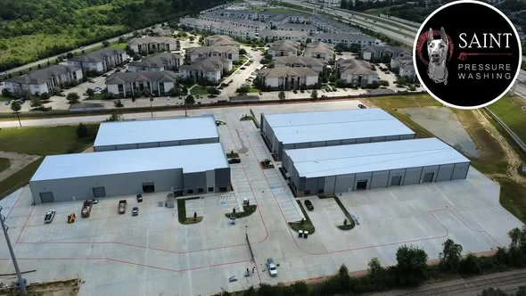
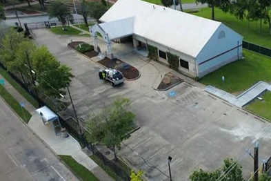
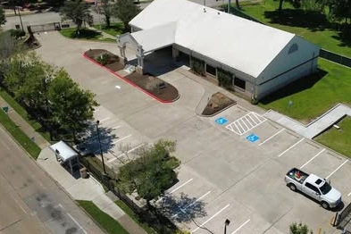

Home / Our Work
The job log.
Real lots, real paint — all photos are Saint’s own, from their Facebook page and website.

Commercial park · aerialClean sweep #2
Bare lot → laid out.
The same property from the air — before, with a worn lot and no layout; after, washed with fresh stalls, an ADA space, hatched aisle and a crisp red curb.


BeforeAfterFrom the job posts
Straight from the crew.
Captions from Saint’s own Facebook posts, with the place each job was tagged.
Fresh lines. Clean finish. A proper restripe can completely transform a property’s first impression.Harris County courthouse annex · Houston
Quick turn around on this County facility for our friends @hcsotexasCounty facility · Baytown
Texans season is around the corner and our customers use this lot for game day parking!!NRG Stadium area · Houston
3 day turn around on a full new construction wash and striping layout done for our customersNew construction · Tomball
Gallery
Lots, lines & wash-downs.
Jobs tagged in
- Houston
- Baytown
- Tomball
- Cypress
- NRG Stadium area
- Harris County facilities
Want your lot in the next post?
Call or text a photo of the job — lots, garages, walks, new construction or your driveway. Saint will size it up and give you a clear, upfront estimate.